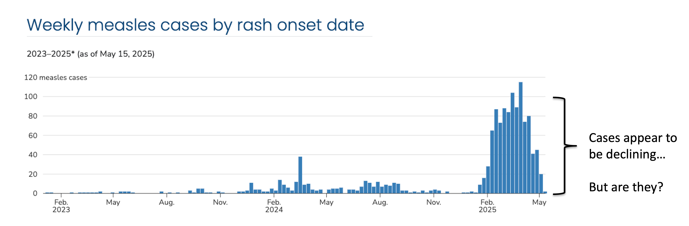

Baseline nowcasting methods for handling delays in epidemiological data
Summary
Delays in epidemiological data can lead to systematic downward bias in recent data, resulting in misleading trends in real-time data used for public health-decision making. Methods to adjust for this bias via nowcasting lack an established baseline method. This gap limits both methodological development and practical adoption in public health. We address these needs with the baselinenowcast R package, which implements an empirically-driven chain ladder nowcasting method. The chain ladder approach, adapted from actuarial science, uses historical reporting patterns to estimate not-yet-reported cases. We adopted an implementation of this method from the German COVID-19 Nowcast Hub, where it served as a reference model. After verifying our implementation reproduced the original nowcasts, we tested specifications tailored to common epidemiological scenarios. The method consistently outperformed simpler baseline approaches. Performance improved further when tuned to specific epidemiological contexts. The baselinenowcast package provides modular functions that make implementation straightforward for practitioners. Find out more in the preprint and explore the package.
What is nowcasting?
Delays in reporting of epidemiological events can create a misleading impression of declining trends in recent data because recent counts of these events are under-represented.
For example, if we index cases by symptom onset in real-time, the cases from the most recent time will be incomplete because cases reported with longer delays have yet to be observed, i.e. these events are “right-truncated”. These are represented by the lighter shaded squares in the reporting triangle and the bars on the right.
Correcting for this systematic downward bias by making estimates of the yet-to-be-observed counts to estimate the “final” count, is called nowcasting. For more on nowcasting in practice, check out Johannes Bracher’s post about the German COVID-19 Nowcast Hub challenge.
Why/when should I care about it?
Mainly because it’s very common in epidemiology, and interpreting the data at face value will be misleading! Systematic downward bias is likely to occur any time case counts are indexed by an event that occurs before reporting and/or when data comes in from different sources with different reporting lags (for example if ED visits are reported by multiple facilities and each facility reports on a different day of the week)
In public health practice, this is often “handled” by shortening time series to remove the partially observed data, or shading over it to indicate its incompleteness, or in some cases leaving as is despite it being so easily misinterpreted.
Here’s an example from the 2024-2025 measles outbreak in the U.S. Cases are indexed by the date of rash onset – which means in real-time cases are getting assigned to previous dates. It takes time from the onset of rash to seek healthcare, through test collection and processing, and finally to reporting the test results, which means the delay between rash onset and when that case appears in the data can be many weeks. On May 15, 2025, we will not be aware of any rash onsets on that day, and only very few, even from the previous week, resulting in the characteristic downward bias we see in this data. At the time, cases were in fact declining, but due to right-truncation, it was difficult to disentangle whether this was a decline or simply missing reports.

What can we do about it?
A number of nowcasting methods have been developed to handle this exact phenomena Meyer, Held, and Höhle (2017); Abbott et al. (2021); McGough et al. (2020); Lopes and Bastos (2025); Gressani (2021), and some have been successfully operationalized, such as in Germany at RKI for COVID-19 and acute respiratory virus incidence KITmetricslab, Johannes Bracher, and Melanie Schienle (2025); Scholler, Wuensche, and Fesser (2025), at UKHSA for flu, norovirus, and RSV Mellor et al. (2025), at the U.S. CDC for visual display of trends in ILI CDC (2025), and in Massachusetts for COVID-19 admissions “Massachusetts Syndromic Surveillance Data and Moving Epidemic Method” (n.d.).
However, these are still the exception, as is exemplified by the U.S. CDC’s measles dashboard Centers for Disease Control and Prevention (2025), with routine nowcast correction still lacking widespread public health adoption.
We identified two critical gaps in this space:
There isn’t an empirically-driven, relatively straightforward tool catered to the epidemiological context that can fill the Wolffram et al. (2023) needs of public health practitioners.
While there are several complex methods for nowcasting, there isn’t a baseline method that can be used as a reference model for other methods to be compared against.
What did we do?
To address these two gaps, we developed an R package, called baselinenowcast which implements an empirically-driven chain ladder method, based on the approach used by Wolffram et al. (2023) as a reference model in the German COVID Nowcast Hub KITmetricslab et al. (2025) challenge in 2021 and 2022.
It has a modular function-based interface that enables inspection of the individual components at each step in the nowcasting procedure, which are outlined in the schematic figure.
- The package has a number of features specifically catered to common epidemiological contexts (such as the ability to borrow estimates from different strata or to change the target to compute say 7-day rolling sums), and documentation tailored to infectious disease surveillance problems.
How did we validate the method?
We first verified that the method produced equivalent outputs to the one it was based on in the German COVID-19 Nowcast Hub.
Then we tested out different method specifications that are available as options in the baselinenowcast package and compared the performance of these modifications to the package default applied to COVID-19 data.
Below is an example comparing the performance of the default baselinenowcast specification (in purple) to a modification which estimates separate delay distributions by weekday (light blue). This shows daily same-day nowcasts compared to the initial reports as of the nowcast date (gray) and the final observed counts (red). The default method doesn’t account for weekday effects in reporting and as a result exhibits strong weekday periodicity, whereas the weekday filter method is much smoother because it knows to expect certain delays on certain weekdays.
- We also compared the performance of multiple baselinenowcast specifications to models used to nowcast norovirus in England from UKHSA, which had been evaluated in a previous study (Mellor et al. (2025)), including a previously used baseline method and what is currently used in public health practice.
Key takeaways:
The
baselinenowcastmethod consistently improved performance over unadjusted data.It also performed better than other baseline methods used in previous studies, including those that were developed ad-hoc for specific purposes
The default performed well when we applied it to COVID-19 and likely is a reasonable first pass that someone could use out of the box.
Exploratory data analysis of the delay distributions revealed differences by age group and weekday effects – tuning our
baselinenowcastspecification to account for this improved performance over the default, and we recommend tuning it for your context.Using
baselinenowcastcompared to other methods helped us better understand the strengths and weaknesses of those methods.
Find out more:
Read the preprint.
Check out the “Getting started” vignette to run through an example using the package’s low-level modular functions, and check out the
baselinenowcastGitHub.The package is still in-development, so we particularly welcome feedback on how to improve the user-interface and communication of the method, and ways that it will be easier to adopt the method into routine public health practice. Feel free to send us an email directly (kaitlyn.johnson@lshtm.ac.uk) or post in the epinowcast forum.